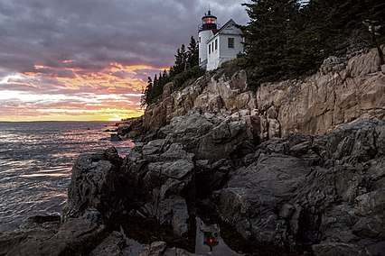

US National Parks
Here's a list of some national parks in the US I've visited. Look at some information about them below!
- Acadia National Park

- Location: Maine
- Established: February 26, 1919
- Arches National Park

- Location: Utah
- Established: November 12, 1971
- Bryce Canyon National Park

- Location: Utah
- Established: February 25, 1978
- Canyonlands National Park
- Location: Utah
- Established: September 12, 1964
- Denali National Park
- Location: Alaska
- Established: February 26, 1917
- Dry Tortugas National Park
- Location: Florida
- Established: October 26, 1992
- Everglades National Park
- Location: Florida
- Established: May 30, 1934
- Glacier National Park
- Location: Montana
- Established: May 11, 1910
- Grand Canyon National Park
- Location: Arizona
- Established: February 26, 1919
- Great Smoky Mountains National Park
- Location: North Carolina, Tennessee
- Established: June 15, 1934
- Haleakalā National Park
- Location: Hawaii
- Established: July 1, 1961
- Hawai'i Volcanoes National Park

- Location: Hawaii
- Established: August 1, 1916
- Kenai Fjords National Park
- Location: Alaska
- Established: December 2, 1980
- Mount Rainier National Park
- Location: Washington
- Established: March 2, 1899
- Olympic National Park
- Location: Washington
- Established: June 29, 1938
Check out my favorite national parks on the next page!